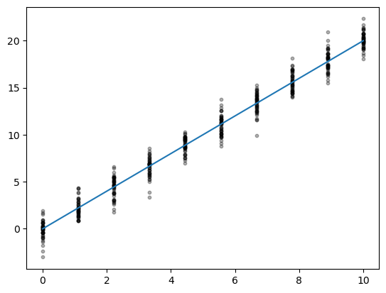
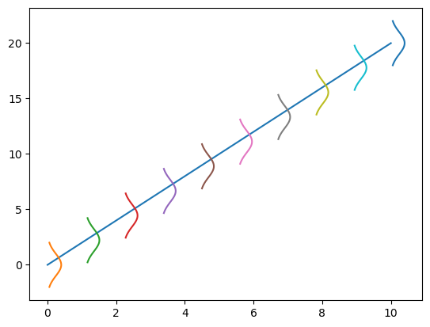
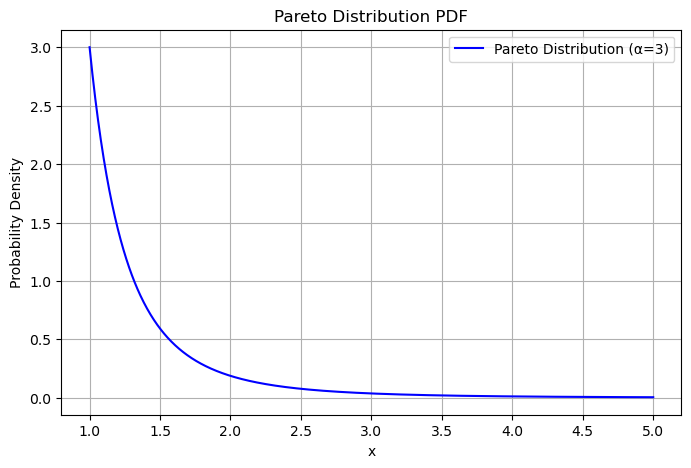
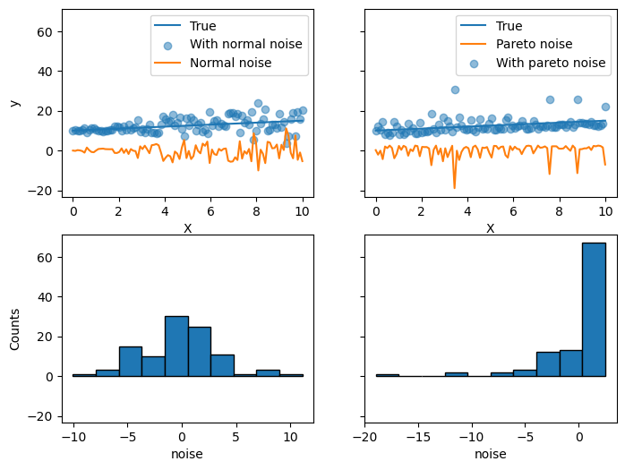
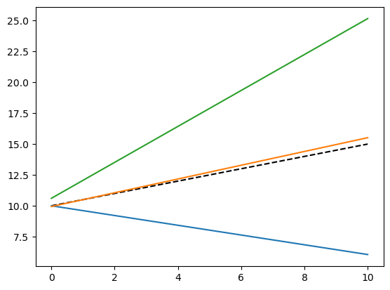
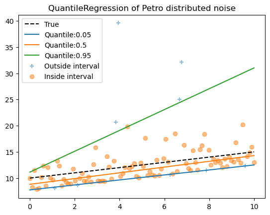

Quantile regression#
Quantile regression is very different from OLS regressor.
🫥quantile =0.2 预测值大于目标值的概率是0.2 . 即如果100个样本，大概20个样本的预测值大于目标值
basic comprehension#
import matplotlib.pyplot as plt
import seaborn as sns
import numpy as np
📌 Distribution y with noise!
fig,ax = plt.subplots()
x = np.linspace(0,10,10)
ax.plot(x,2*x)
for i in x:
noise = np.random.normal(scale=1, size=50)
ax.scatter([i]*len(noise), 2*i + noise, alpha=0.3, color='black', s=10)

from scipy.stats import norm
fig,ax = plt.subplots()
x = np.linspace(0,10,10)
ax.plot(x,2*x)
for i in x:
sigma = 1
mu = 2*i
y_noise = np.linspace(mu -2*sigma, mu + 2*sigma, 100)
y_noise_p = norm.pdf(y_noise, mu, sigma)
ax.plot(i+y_noise_p, y_noise)

X.shape
(100, 1)
y_true_mean.shape
(100, 1)
We will create two subsequent problems by changing the distribution of the target y while keeping the same expected value:
in the first case, a heteroscedastic Normal noise is added; x↑， noise↑。(正态异方差噪声)
in the second case, an asymmetric Pareto noise is added. Pareto
帕累托分布（Pareto Distribution）是一种长尾分布，常用于描述财富分配、城市人口、公司规模、灾难损失等现实世界中不均匀的现象。
1. 定义
帕累托分布的概率密度函数（PDF）为：
$$
f(x) = \frac{\alpha x_m^\alpha}{x^{\alpha+1}}, \quad x \geq x_m
$$
其中：
$ \alpha > 0 $ 是形状参数（shape parameter），决定分布的陡峭程度
$ x_m > 0$是最小值（scale parameter），表示数据的最小可能值
如果 $ \alpha $ 较小，意味着极端值（大值）更可能出现；如果 $\alpha $ 较大，数据更集中在较小范围。
import numpy as np
import matplotlib.pyplot as plt
from scipy.stats import pareto
# 设定帕累托分布的参数
alpha = 3 # 形状参数 (shape parameter)
x_m = 1 # 最小值 (scale parameter)
# 生成 x 值（从 x_m 开始）
x = np.linspace(x_m, 5, 1000)
y = pareto.pdf(x, alpha, scale=x_m)
# 绘制帕累托分布的概率密度函数（PDF）
plt.figure(figsize=(8, 5))
plt.plot(x, y, label=f"Pareto Distribution (α={alpha})", color='b')
plt.xlabel("x")
plt.ylabel("Probability Density")
plt.title("Pareto Distribution PDF")
plt.legend()
plt.grid()
# 显示图像
plt.show()

generate data#
rng = np.random
X = np.linspace(0,10,100)
X = X[:, np.newaxis]
y_true_mean = 10+0.5*X
y_normal = y_true_mean + rng.normal(
loc=0,
scale=0.5+0.5*X,
size = y_true_mean.shape
)
a=5
y_pareto = y_true_mean + 10 * (rng.pareto(a,size=y_true_mean.shape) - 1 / (a - 1))
正态异方差noise: 为每个x对应个正态分布，X越大方差越大，但是均值为0. 即这n个噪声是从n个分布产生的。
帕累托噪声noise：大部分噪音较小，尾巴的噪声噪声大。
fig, axes = plt.subplots(2,2, figsize=(8,6), sharey= True)
axes[0,0].plot(X,y_true_mean, label='True')
axes[0,0].scatter(X,y_normal,
label='With normal noise', alpha=0.5)
axes[0,0].plot(X,y_true_mean - y_normal, label='Normal noise')
axes[0,0].legend()
axes[0,0].set_xlabel('X')
axes[0,0].set_ylabel('y')
axes[1,0].hist(y_true_mean-y_normal,edgecolor='black')
axes[1,0].set_ylabel('Counts')
axes[1,0].set_xlabel('noise')
axes[0,1].plot(X,y_true_mean, label='True')
axes[0,1].plot(X,y_true_mean - y_pareto, label='Pareto noise')
axes[0,1].scatter(X,y_pareto, label='With pareto noise', alpha=0.5)
axes[0,1].legend()
axes[0,1].set_xlabel('X')
axes[1,1].hist(y_true_mean-y_pareto,edgecolor='black')
axes[1,1].set_xlabel('noise')
Text(0.5, 0, 'noise')

📌
异方差正态噪音中， X越大，噪声越大！
帕累托大部分稳定，少数的噪声非常大！
FIT- Normal noise#
y_normal.shape
(100, 1)
from sklearn.linear_model import QuantileRegressor
quantiles = [0.05, 0.5, 0.95] # 表
predictions = {}
out_bounds_predictions = np.zeros_like(y_true_mean, dtype=np.bool_)
for quantile in quantiles:
qr = QuantileRegressor(quantile=quantile, alpha=0)
y_pred = qr.fit(X,y_normal.ravel()).predict(X)
y_pred = y_pred[:,np.newaxis]
predictions[quantile] = y_pred
if quantile == min(quantiles):
out_bounds_predictions = np.logical_or(
out_bounds_predictions, y_pred > y_normal
)
print(f'SMALL {quantile}, pred>real , counts:{np.sum(y_pred > y_normal)}')
elif quantile == max(quantiles):
out_bounds_predictions = np.logical_or(
out_bounds_predictions, y_pred < y_normal
)
print(f'BIG {quantile}, pred>real , counts:{np.sum(y_pred > y_normal)}')
SMALL 0.05, pred>real , counts:5
BIG 0.95, pred>real , counts:94
plt.plot(X,y_true_mean, color='black',linestyle='--', label='True')
for quantile,y_pred in predictions.items():
plt.plot(X,y_pred,label=f"Quantile:{quantile}")
plt.scatter(
x[out_bounds_predictions],
y_normal[out_bounds_predictions],
marker="+",
alpha=0.5,
label="Outside interval",
)
plt.scatter(
x[~out_bounds_predictions],
y_normal[~out_bounds_predictions],
alpha=0.5,
label="Inside interval",
)
plt.legend()
plt.title(f"QuantileRegression of heteroscedastic Normal distributed noise")
---------------------------------------------------------------------------
IndexError Traceback (most recent call last)
Cell In[18], line 5
2 for quantile,y_pred in predictions.items():
3 plt.plot(X,y_pred,label=f"Quantile:{quantile}")
4 plt.scatter(
----> 5 x[out_bounds_predictions],
6 y_normal[out_bounds_predictions],
7 marker="+",
8 alpha=0.5,
9 label="Outside interval",
10 )
11 plt.scatter(
12 x[~out_bounds_predictions],
13 y_normal[~out_bounds_predictions],
14 alpha=0.5,
15 label="Inside interval",
16 )
17 plt.legend()
IndexError: too many indices for array: array is 1-dimensional, but 2 were indexed

📈
quantile 0.05 : 大约有5个样本的预测值大于真实值。
FIT- Petro noise#
from sklearn.linear_model import QuantileRegressor
quantiles = [0.05, 0.5, 0.95] # 表
predictions = {}
out_bounds_predictions = np.zeros_like(y_true_mean, dtype=np.bool_)
for quantile in quantiles:
qr = QuantileRegressor(quantile=quantile, alpha=0)
y_pred = qr.fit(X,y_pareto.ravel()).predict(X)
y_pred = y_pred[:,np.newaxis]
predictions[quantile] = y_pred
if quantile == min(quantiles):
out_bounds_predictions = np.logical_or(
out_bounds_predictions, y_pred > y_pareto
)
print(f'SMALL {quantile}, pred>real , counts:{np.sum(y_pred > y_pareto)}')
elif quantile == max(quantiles):
out_bounds_predictions = np.logical_or(
out_bounds_predictions, y_pred < y_pareto
)
print(f'BIG {quantile}, pred>real , counts:{np.sum(y_pred > y_pareto)}')
SMALL 0.05, pred>real , counts:5
BIG 0.95, pred>real , counts:94
plt.plot(X,y_true_mean, color='black',linestyle='--', label='True')
for quantile,y_pred in predictions.items():
plt.plot(X,y_pred,label=f"Quantile:{quantile}")
plt.scatter(
x[out_bounds_predictions],
y_pareto[out_bounds_predictions],
marker="+",
alpha=0.5,
label="Outside interval",
)
plt.scatter(
x[~out_bounds_predictions],
y_pareto[~out_bounds_predictions],
alpha=0.5,
label="Inside interval",
)
plt.legend()
plt.title(f"QuantileRegression of Petro distributed noise")
Text(0.5, 1.0, 'QuantileRegression of Petro distributed noise')
